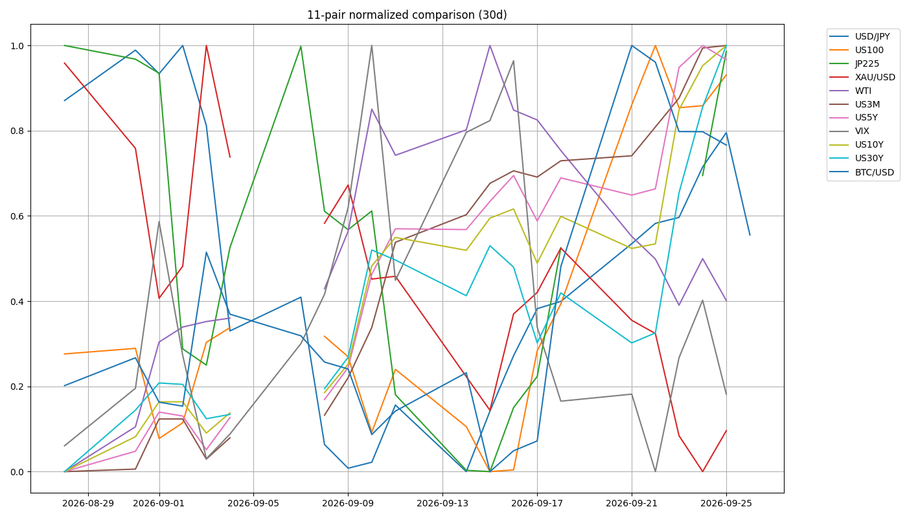

機械レジーム
Neutral
Equities up · Oil range · Gold off · Yields rising。30日窓の分類で安全宣言ではない。
株の支持を確認して参加する。原油と米長期金利の再上昇が株の支持割れと重なれば、防御へ切り替える。
対象営業週 9/21–9/25 · 作成 2026-09-27 · Bossチャート表示値を優先。市場ごとにベンダー・時点が異なる。
Equities up · Oil range · Gold off · Yields rising。30日窓の分類で安全宣言ではない。
機械VIX 14.870 < 18。原油、米金利、株の支持を別に確認する。
WTI 99.303支持化 ＋ US10Y 5.228超 ＋ US100 29,935.5割れを重視。
0.5 @ 4,330.23 ＋ 0.5 @ 4,279。判断基準4,230／報告注文4,220。
機械snapshotはUSDJPYのみ9/26、通常市場は9/25で SPLIT。BTCは24/7の別枠。YahooのGC=F・CL=FとBossの現物CFDを同値として扱わない。9/25引け後の停戦案拒否報道を同日の原油下落の原因へ遡及させない。
WTIが99.303未満、米10Yが5.228を上抜け定着せず、US100が29,935.5、JP225が66,042を維持。
行動候補：支持確認後の参加。US100 30,748.9上抜け後は31,000を観測。
撤回：原油・金利上昇と株支持割れが重なる。
WTI 99.303支持化、米10Y 5.228・30Y 5.532上抜け、US100 29,935.5またはJP225 64,905割れ。
行動候補：新規の共通リスクを抑え、半導体・円・金関連の重複を確認。
撤回：原油反落、金利高値更新失敗、株支持回復。
金利が下がるのにUS100が支持を失い、VIXが上がる。
行動候補：金利低下を即座に買い材料とせず、景気・信用の材料を確認。
撤回：株支持回復とVIX沈静化。
DXY 100.335を維持してもUSDJPYが156.852を割る。
行動候補：円固有の政策発言・ポジション調整を確認。
撤回：158.285の支持化。価格だけで介入実施を認定しない。
| 市場 | Boss添付表示値 | 上の確認 | 下の確認・反証 |
|---|---|---|---|
| US100 CFD | 30,635.2 | 30,748.9突破・支持化 | 29,935.5割れ → 29,501.3 / 29,241.4 |
| JP225 CFD | 66,642 | 67,385突破 | 66,277–66,042支持、64,905割れで反発仮説撤回 |
| USDJPY | 157.281 | 157.521–158.285の戻り失速を確認 | 156.852割れ後の戻り失敗。158.285支持化で売り仮説撤回 |
| EURUSD | 1.13902 | 1.14560–1.14980の戻り失速 | 1.13695割れ → 1.13216。1.15246支持化で撤回 |
| WTI cash | 95.915 | 99.303支持化 → 105.254 / 106.785再評価 | 94.849割れ → 92.404 / 86.167 |
| Gold spot / CFD | 4,284.99 | 4,288.55回復 → 4,319.13支持化 | 4,268.13 / 4,235.02を観測。保有玉4,230基準／注文4,220は別 |
| 米国金利 TVC | 2Y 4.860% / 10Y 5.167% / 30Y 5.490% | 10Y 5.228%・30Y 5.532%超え | 2Y約4.80%、10Y約5.10–5.00%への低下時は株・VIXも確認 |
| BTCUSD | 84,153.73（9/26撮影中） | 85,732抵抗 | 83,795.61支持割れ → 81,414.80を確認。9/25確定終値ではない |
TVC 2s10sは前週24.4→30.7bp（+6.3bp）。Yahoo 5s10sの30日変化 −6.2bpとは年限・比較窓・feedが異なる。FRED真の2s10s +31bpは9/24時点。FRED BEは9/25時点5Y 2.34%（1w +3bp）、5y5y 2.34%（1w −1bp）。

図は機械の30日正規化系列。BossのCFD表示終値に置き換える図ではない。
前週比 +¥85,048＝保有評価差 +¥84,985 ＋ sweep +¥63。
国内 ¥4,224,538 / 米国 ¥526,055 / sweep ¥202,763。
累計実現 +422.885 ＋ 含み −19.625。当週決済0、前週評価込みから −93.460。
pt・Lotを契約倍率不明のまま円貨へ換算しない。
12銘柄の数量は前週と一致。往復売買がなかった証明にはならない。sweep +¥63の原因は明細未提示で未確認。
US口座の円換算は約−¥14,401の原資産側＋約¥2,827の為替寄与という表示丸めを使う概算。
1655と2243は原則として為替ヘッジなし。比較には東証と米国市場の引け時刻差があるため、週末FXだけを機械的に差し引いて厳密な原資産騰落としない。
Grok X検索の3投稿は原投稿を独立取得できなかった。入札統計、介入、供給損害の公式事実として採用しない。P9回数不変／P10定義待ち／P11反例1維持／P12同FXCM同窓待ち。